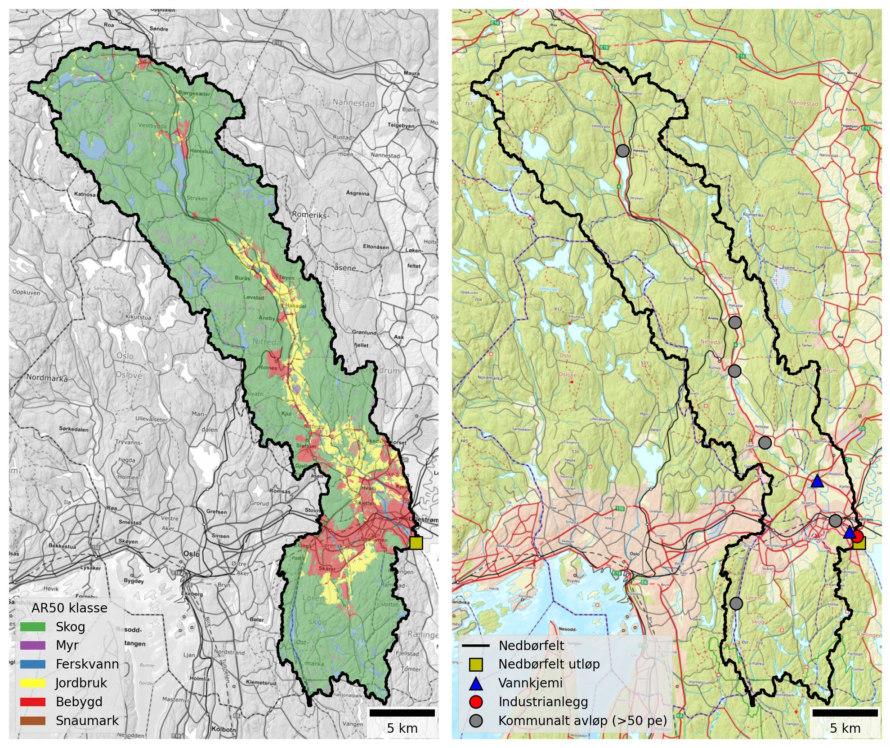
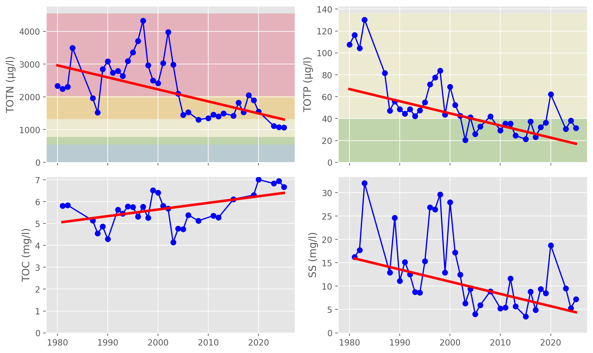
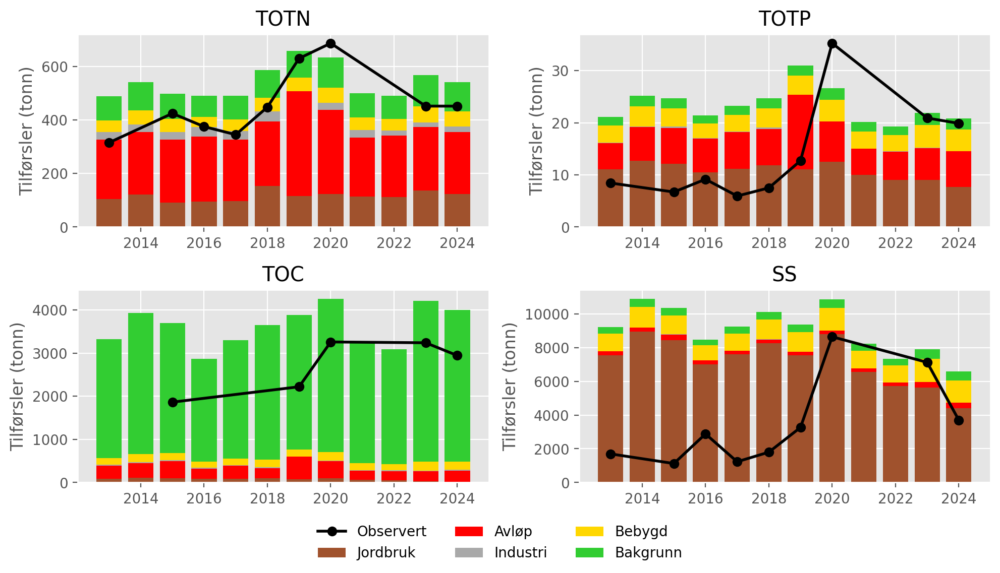
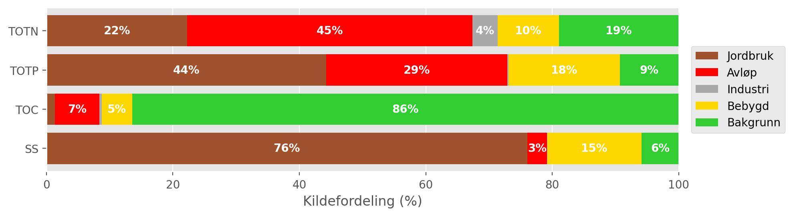
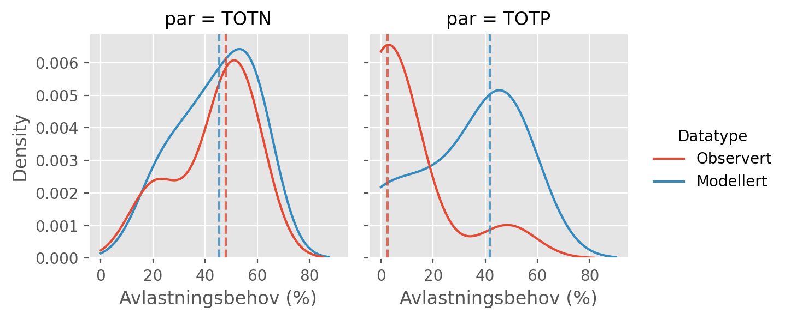
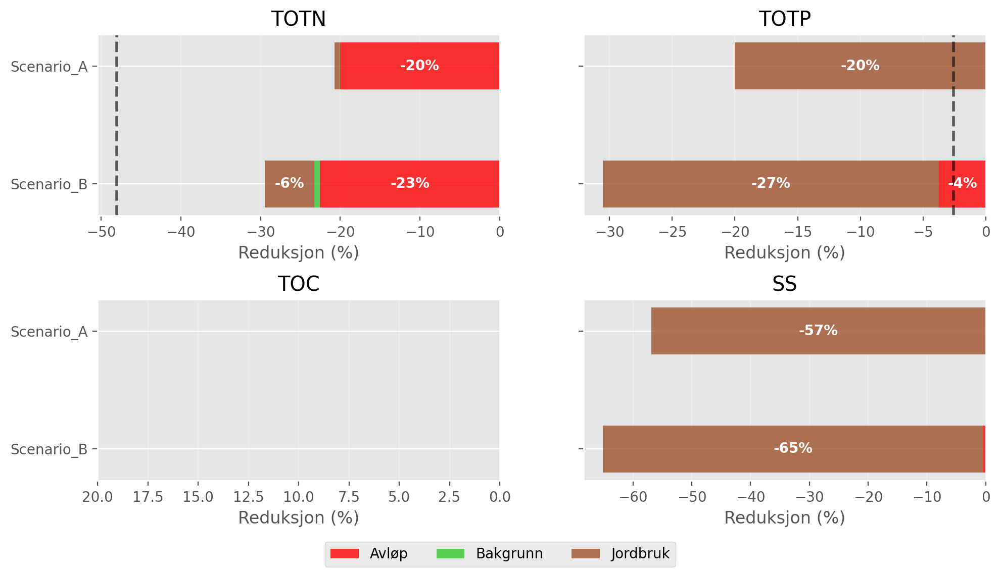

| Nedbørfelt | Nitelva | |
|---|---|---|
| AR50 klasse | km² | % |
| Bebygd | 45.3 | 9 |
| Jordbruk | 36.1 | 8 |
| Skog | 363.9 | 75 |
| Snaumark | 3.8 | 1 |
| Myr | 9.1 | 2 |
| Ferskvann | 25.7 | 5 |
| Totalt | 483.9 | 100 |
6 Nitelva (including Sagelva)
Nitelva is a medium sized catchment (484 km²) that includes Sagelva as a tributary. Land cover is dominated by forest (75 %), but there are significant areas of urban and agricultural land located along the river valley and in the lower part of the catchment. See Figure 6.1 and Table 6.1. 25 % of the catchment in located below the marine limit and approximately 13 % of the land area - including most agricultural land - is underlain by marine deposits. For this reason, the catchment is classified as leirpåvirket (clay-influenced) under the Water Framework Directive (Table 3.2).

Nitelva receives discharges from several municipal wastewater treatment plants, the largest of which is Nedre Romerike avløpsanlegg (NRA), located just upstream of the catchment outflow. A little further upstream there is also a decommissioned treatment plant at Slattum, which was operational until 2019. In the middle part of the catchment there are treatment plants at Rotnes and Åneby, and in the upper catchment is Harestua renseanlegg, which discharges to the northern end of Harestuvatnet. The catchment also receives significant nutrient inputs from Dynea Lillestrøm, a manufacturer of adhesives and industrial coatings that discharges close to the catchment outflow (Figure 6.1 and Table 6.2).
Note that, as of 2026, the wastewater treatment plants at Rotnes and Åneby are being decommissioned and replaced. However, since the modelling in this report uses data up to 2024, both plants are considered “active” in this analysis.
| Navn | Sektor | Type | TOTN (tonn) | TOTP (tonn) | TOC (tonn) | SS (tonn) |
|---|---|---|---|---|---|---|
| Mariholtet sportsstue, renseanlegg | Kommunalt avløp (>50 pe) | Naturbasert | 0.01 | 0.00 | 0.01 | 0.01 |
| Dynea Lillestrøm | Industrianlegg | Kjemisk industri | 27.13 | 0.11 | 17.86 | 5.79 |
| NRA (Nedre Romerike avløpsanlegg) | Kommunalt avløp (>50 pe) | Kjemisk-biologisk m/N-fjerning | 179.29 | 5.20 | 217.73 | 162.97 |
| Diplom-Is avd Produksjon Gjelleråsen | Industrianlegg | Næringsmiddelindustri, unntatt fiskeforedling | nan | nan | 0.65 | nan |
| Rotnes renseanlegg | Kommunalt avløp (>50 pe) | Kjemisk | 24.79 | 0.37 | 20.27 | 15.51 |
| Slattum renseanlegg (Nedlagt) | Kommunalt avløp (>50 pe) | Kjemisk | 25.25 | 0.42 | 54.56 | 30.44 |
| Åneby renseanlegg | Kommunalt avløp (>50 pe) | Kjemisk | 18.03 | 0.14 | 12.32 | 6.51 |
| Harestua renseanlegg | Kommunalt avløp (>50 pe) | Kjemisk-biologisk | 11.61 | 0.13 | 6.34 | 12.41 |
6.1 Monitoring data
The best monitoring data for the Lower Nitelva (waterbody ID 002-3891-R) come from Vannmiljø station 002-30586 (Rud Nitelva), which has been monitored since the 1980s. Monitoring at this station stopped at the end of 2020, after which the best data come from station 002-79092 (Nitelva, Rud), located about 300 m upstream. The monitoring dataset for this waterbody is generally of good quality, except during 2021 and 2022, when the sampling frequency is low. About 5 km further upstream, Vannmiljø station 002-30578 (Kjellerholen Nitelva) also provides long-term data for waterbody 002-1638-R (Nitelva Slattum-Kjeller), beginning in 1995.
Figure 6.2 shows trends in mean annual concentrations estimated from the combined dataset for waterbody 002-3891-R. Since the 1980s, there have been significant decreases in concentrations of TOTN (-37 μg-N/l/year on average), TOTP (-1 μg-P/l/year) and SS (-0.25 mg/l/year). There is also an increasing trend in concentrations of TOC (by an average of +0.03 mg-C/l/year).
Declining trends in TOTN concentrations and increasing trends in TOC are also observed in Sagelva (Figure 5.2) and for waterbody 002-1638-R (Nitelva Slattum-Kjeller; see here), both of which are only a short distance upstream of Nedre Nitelva (waterbody 002-3891-R). However, decreasing trends in TOTP and SS concentrations are not observed at these locations, which implies reductions in TOTP and SS inputs may have occurred primarily along the Nitelva main stem, between waterbodies 002-1638-R and 002-3891-R (i.e. between the two blue triangles on Figure 6.1).
{kind=link}
The increasing trend in TOC concentrations identified in several Nitelva subcatchments is consistent with patterns in TOC observed elsewhere in South-eastern Norway. These changes are partly driven by the increasing solubility of organic matter in forest and upland soils as catchments recover from acidification. This has led to “browning” of surface waters in many rivers and lakes previously affected by acidification, and also to “coastal darkening” in parts of Oslofjord and Skagerrak (e.g. Frigstad et al., 2023).
In terms of water quality status, recent annual concentrations of TOTN in the Lower Nitelva are typically towards the middle of the Moderate status band, which is an improvement compared to consistently Poor status during the decade prior to 2020. For TOTP, concentrations have generally been below 40 μg-P/l (the upper threshold for Good status) since the early 2000s. However, in recent years, measured TOTP concentrations have been close to the Good/Moderate boundary, and in Vann-Nett the waterbody is currently assigned Moderate status for TOTP.

002-3891-R (Nedre Nitelva). Solid red lines show statistically significant linear trends (\(p ≤ 0.05\)); dashed red lines indicate weak evidence of a linear trend (\(0.05 < p ≤ 0.10\)); and dashed black lines indicate no statistically significant trend (\(p > 0.10\)). Background colours show thresholds for water quality status defined under the Water Framework Directive and taken from Vann-Nett, where available (bad, poor, moderate, good and high).
6.2 Source apportionment
Figure 6.3 shows nutrient fluxes for Nitelva estimated from observed data (black lines) together with source-apportioned fluxes simulated by TEOTIL3 (stacked bars). TEOTIL3’s simulations for TOTN and TOC are consistent with the monitoring data. For TOTP and SS, TEOTIL3’s simulated fluxes are higher than the monitored fluxes until 2020, when observed fluxes increase sharply. From 2020 onwards, TEOTIL’s simulations are broadly compatible with fluxes estimated from monitoring data.
As noted in Section 6.1, data from 2020 onwards come predominantly from Vannmiljø station station 002-79092 (Nitelva, Rud), whereas before 2020 most data come from a different site (002-30586; Rud Nitelva). Changes to the monitoring programme are therefore one explanation for the sudden increase in measured fluxes, illustrating the large uncertainties in particulate nutrient loads estimated from low frequency sampling (see Section 4.4). Other factors include a landslide that occurred in Nittedal in autumn 2019, which damaged the sewerage network and resulted in increased wastewater discharges, as well as unusually high loads of phosphorus-rich clay particles. In 2023, the catchment was also affected by Storm Hans, an extreme weather event associated with widespread flooding and erosion.
Before 2019, measured fluxes of TOTP based on data from 002-30586 (Rud Nitelva) are typically 8 to 10 tonnes per year (Figure 6.3). This seems surprisingly low given that (i) measured TOTP fluxes from Sagelva are 2 to 4 tonnes per year (Figure 5.3); (ii) recent TOTP fluxes measured at Kjellerholen (Vannmiljø station 002-30578), approximately 5 km upstream, vary between 7 and 20 tonnes/year (see here), and (iii) reported TOTP discharges from NRA, less than a kilometre upstream, are typically around 5 tonnes/year (Table 6.2). Based on this, it seems plausible that the measured fluxes for TOTP and SS between 2013 to 2018, shown as a black line on Figure 6.3, are underestimating the true flux.
{kind=link}
Combining the available datasets, typical nutrient fluxes for Nedre Nitelva (waterbody 002-3891-R) are approximately:
- 400 to 800 tonnes/year for TOTN
- 10 to 40 tonnes/year for TOTP
- 2500 to 4000 tonnes/year for TOC
- 3000 to 12000 tonnes/year for SS
As described in Section 4.4, high natural variation (and also high uncertainty) are expected for TOTP and SS.

002-3891-R (Nedre Nitelva). Black lines show fluxes estimated from monitoring data; stacked bars show source-apportioned fluxes simulated by TEOTIL3.
Figure 6.4 shows the mean percentage contribution from each source to annual fluxes for the period from 2020 to 2024. According to TEOTIL3, municipal wastewater discharges are the main source of TOTN, accounting for 45 % of the nitrogen flux to waterbody 002-3891-R. Of this, rainwater and emergency overflows within Lillestrøm kommune account for 1 %, spredt avløp contributes an additional 0.5 %, and the remainder (43.5 %) comes from treated wastewater discharges from major municipal wastewater plants. The largest of these is NRA, which has an average TOTN discharge of 180 tonnes/year between 2013 to 2024 (Table 6.2), accounting for approximately one third of the TOTN load reaching waterbody 002-3891-R. After NRA, the second largest point source of nitrogen to Nedre Nitelva is the industrial plant Dynea Lillestrøm, which contributes about 4 % of the TOTN load. Other significant sources of TOTN in the catchment include agriculture (22 %) and background runoff (19 %).
For TOTP, agriculture is the dominant source, contributing 44 % of the TOTP load. Wastewater contributions are also significant, accounting for 29 % of the TOTP load. Of this, 24 % comes from the main outlets of municipal wastewater treatment plants, 1 % comes from spredt avløp, and 4 % is from rainwater and emergency sewerage overflows within Lillestrøm kommune.
In common with many catchments in this area, TOC inputs come primarily from forested areas (included within the “background” class in TEOTIL3), while SS fluxes are dominated by particulate material derived from clay-rich agricultural land.

002-3891-R (Nedre Nitelva) based on TEOTIL3 simulations from 2020 to 2024. For clarity, labels are omitted for sources contributing less than 3 %.
6.3 Load reductions and scenarios
During the decade from 2015 to 2024, the median annual flow volume from Nitelva (station 002-30586) was 376 Mm³/year. Taking the maximum concentrations for GES of 775 μg/l for N and 40 μg/l for P, the maximum annual load for Good status in a typical year is approximately 290 tonnes for TOTN and 15 tonnes for TOTP. Observed loads for TOTN (black lines on Figure 6.3) are consistently higher than this, while TOTP fluxes are generally lower than 15 tonnes before 2020 and higher afterwards. To give a more detailed picture, Figure 6.5 shows the distribution of annual avlastningsbehovene estimated for each year between 2015 and 2024. Red curves show distributions based on measured loads, while blue curves are based on model output from TEOTIL3. For TOTN, the observed and modelled distributions are similar, reflecting the generally good agreement between measured and simulated fluxes (Figure 6.3). The median avlastningsbehov estimated from measured data is 48 %, compared to 45 % from TEOTIL3.
For TOTP, the median avlastningsbehov based on measured data is just 3 %, since between 2015 and 2019 measured loads either already achieve GES or are very close. However, as described above in Section 6.2, from 2020 measured fluxes increase sharply. When this happens, avlastningsbehovene based on measured data also increase, reaching as high as 49 % in 2020. For this reason, the distribution of avlastningsbehov for TOTP based on observed data (red curve on Figure 6.5) has two peaks: one centred around zero, which is influenced primarily by data collected before 2020, and another smaller peak centred around 50 %, which is influenced by data collected from 2020 onwards (at different monitoring stations). Simulated TOTP fluxes from TEOTIL3 broadly match the monitoring data from 2020, but modelled fluxes are consistently high for the entire simulation period (Figure 6.3). Annual avlastningsbehovene based on TEOTIL3 are therefore also consistently high, with a median of 42 %.

Figure 6.6 shows load reductions achieved for the Nitelva catchment by two scenarios modelled by Wallhead et al. (2026). These scenarios considered packages of agricultural measures and upgrades to larger municipal wastewater treatment plants (Section 4.8).
For TOTN, the biggest load reductions are achieved by upgrading municipal wastewater treatment plants. In scenario A, plants with capacity greater than 10 000 p.e. were upgraded to achieve a nitrogen treatment efficiency of 80 %. Within the Nitelva catchment, this applies to the treatment plants at NRA, Rotnes and Slattum. (Note that Slattum closed down in 2019, but it is included in the scenarios of Wallhead et al. because they used data from 2017 to 2019 to define their baseline). NRA is classified as a chemical-biological treatment plant with nitrogen removal. In the years from 2017 to 2019, it reported an average nitrogen removal efficiency of about 70 %. For Rotnes and Slattum, the available data are insufficient for site-specific treatment efficiencies to be calculated, but efficiencies for TOTN are assumed to about 20 % based on typical values for chemical treatment plants. In scenario A, upgrading these three plants to achieve nitrogen removal efficiencies of 80 % reduces wastewater inputs of TOTN to Nitelva by around 120 tonnes/year, which corresponds to about 20 % of the annual TOTN load reaching waterbody 002-3891-R. In scenario B, further upgrades are applied to wastewater plants with capacity between 5000 and 10 000 p.e. This includes Åneby, which is assumed to achieve a nitrogen removal efficiency of 70 % in scenario B, leading to a further 2 to 3 % reduction in catchment TOTN loads. In addition, the Lillestrøm-specific dataset of wastewater overflows (Section 4.6.2) suggests that a further 1 % reduction in TOTN loads could be achieved if rainwater and emergency overflows within Lillestrøm kommune were reduced to zero (Section 6.2). Reductions to TOTN loads due to agricultural measures are negligible in scenario A and slightly more than 6 % in scenario B. The total load reduction achieved for nitrogen under scenario B is around 30 %, which is not enough to reach the estimated avlastningsbehov for GES of 45 - 48 % (Table 6.3).
For TOTP, almost all reductions come from agricultural measures, which achieve a 20 % reduction in TOTP loads in scenario A and 27 % in scenario B. These reductions comfortably exceed the median avlastningsbehov of 3 % estimated from the the monitoring data (black dashed line on Figure 6.6).
Neither scenario makes a large difference to loads of TOC, since most organic carbon comes from background sources (Figure 6.4). Nevertheless, the scenarios assume that upgraded wastewater treatment plants achieve 95 % treatment efficiencies for BOF5 and KOF, leading to a roughly 5 % decrease in catchment scale TOC loads. Agricultural measures in both scenarios achieve a further TOC reduction of 1 to 2 %.
For SS, NIBIO’s modelling suggests that agricultural measures are capable of substantially reducing losses of particulate material from agricultural land. Since agriculture occupies many of the areas underlain by marine clay deposits (compare Figure 2.2 and Figure 2.3), these measures have the potential to significantly reduce SS fluxes at catchment scale.
A summary of avlastningsbehovene for GES in Nitelva and the reductions achieved by scenarios A and B is shown in Table 6.3.

| Nedbørfelt | Vannforekomst ID | Parameter | Vann-Nett tilstand | Avlastningsbehov fra observert data (%) | Avlastningsbehov fra modellert data (%) | Reduksjon ScA (%) | Reduksjon ScB (%) |
|---|---|---|---|---|---|---|---|
| Nitelva | 002-3891-R | SS | Undefined | -57 | -65 | ||
| Nitelva | 002-3891-R | TOC | Undefined | -6 | -7 | ||
| Nitelva | 002-3891-R | TOTN | Moderate | -48 | -45 | -21 | -29 |
| Nitelva | 002-3891-R | TOTP | Moderate | -3 | -42 | -20 | -31 |